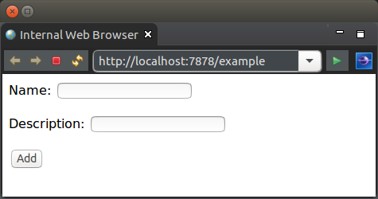

This tutorial looks at handling a form submission.
The below example for this tutorial will implement a simple form submission. The form submission will validate a name was entered and provide a message if successfully entered.
The simple form for this tutorial is as follows:
The below is the content of the Template.woof.html.
<html>
<body>
<form action="#{POST:handleSubmission}" method="POST">
<p>Name: <input type="text" name="name" value="${name}" /> ${nameIssue ${message} $}</p>
<p>Description: <input type="text" name="description" value="${description}" /></p>
<p><input type="submit" value="Add" /></p>
</form>
<p>${successMessage}</p>
</body>
</html>
The difference to previous tutorials is that the HTTP method is qualified in the link. This configures WoOF to handle the POST method in this case. This is used to specify handling of various other HTTP methods (useful for REST interaction with the server).
The default handling for unqualified links is both GET and POST. This is to support common use cases of link navigation and form submissions.
The logic to handle the form submission is the following:
public class TemplateLogic {
@Data
@HttpParameters
public static class Parameters implements Serializable {
private static final long serialVersionUID = 1L;
private String name;
private Issue nameIssue;
private String description;
private String successMessage;
}
@Data
public static class Issue implements Serializable {
private static final long serialVersionUID = 1L;
private final String message;
}
/**
* Obtains the bean for rendering the template.
*
* @param submittedParameters Same {@link Parameters} that was constructed for
* {@link #handleSubmission(Parameters)}. This allows
* the page to be rendered with the values provided
* by the client.
* @return {@link Parameters} for rendering to page.
*/
public Parameters getTemplateData(Parameters submittedParameters) {
return submittedParameters;
}
/**
* Reflectively invoked to handle form submission.
*
* @param submittedParameters {@link Parameters} which is dependency injected.
* It is constructed via its default constructor and
* has the HTTP parameters values loaded by
* corresponding names.
*/
public void handleSubmission(Parameters submittedParameters) {
// Ensure have a name provided
String name = submittedParameters.getName();
if ((name == null) || (name.trim().length() == 0)) {
submittedParameters.setNameIssue(new Issue("Must provide name"));
return;
}
// TODO use values to undertake some business logic. Typically would
// provider further dependencies as parameters to this method to allow
// this.
// Provide success message (and clear values)
submittedParameters.setSuccessMessage("Thank you " + name);
submittedParameters.setName(null);
submittedParameters.setDescription(null);
}
}
The aspects to notice are:
OfficeFloor achieves this simple interactive programming model by substituting into the rendered page a unique URL which it can map back to the corresponding method. The method is matched by its name and is free to have any parameters it requires (enabled by OfficeFloor's continuation injection and dependency injection). For example in more complex applications the handling methods may include a parameter for a DataSource or EntityManager to enable database interaction rather than just providing a message back to the client. Later tutorials will explain how to inject further dependencies.
The unit test requests the various URL's exposed from the template.
@RegisterExtension
public final OfficeFloorExtension officeFloor = new OfficeFloorExtension();
@RegisterExtension
public final HttpClientExtension client = new HttpClientExtension();
@Test
public void pageInteraction() throws Exception {
// Request the initial page
HttpResponse response = this.client.execute(new HttpGet(this.client.url("/example")));
assertEquals(200, response.getStatusLine().getStatusCode(), "Request should be successful");
String responseEntity = EntityUtils.toString(response.getEntity());
assertFalse(responseEntity.contains("Daniel"), "Should not have entry");
// Send form submission
HttpPost post = new HttpPost(this.client.url("/example+handleSubmission"));
post.setHeader("Content-Type", "application/x-www-form-urlencoded");
post.setEntity(new StringEntity("name=Daniel&description=founder"));
response = this.client.execute(post);
assertEquals(200, response.getStatusLine().getStatusCode(), "Should submit successfully");
responseEntity = EntityUtils.toString(response.getEntity());
assertTrue(responseEntity.contains("<p>Thank you Daniel</p>"), "Should indicate added");
}
The next tutorial looks at storing state between requests within a HTTP session.